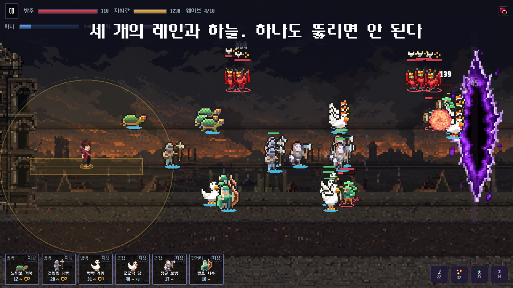
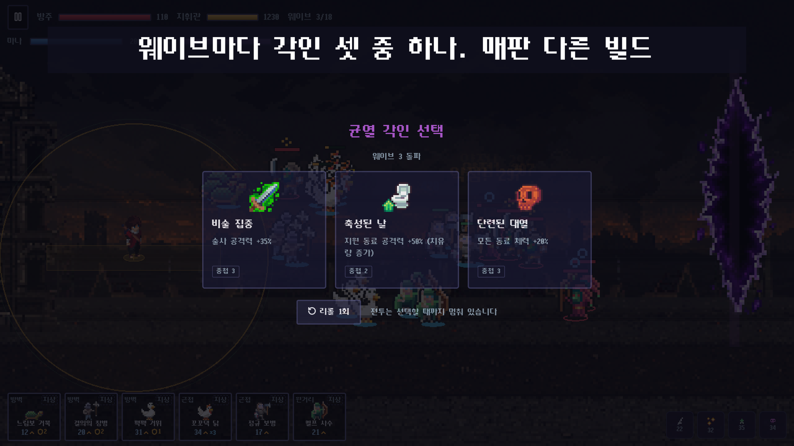
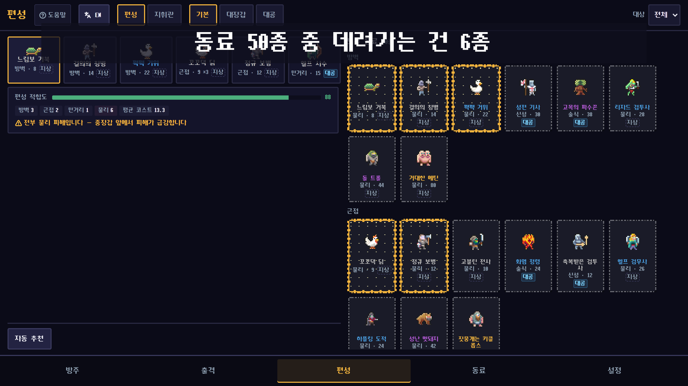

지휘관이 전장에 있다
지휘관의 오라 안에서 지원 능력이 작동합니다. 전선으로 나가면 강해지지만 직접 공격받을 수 있어 위치 선정이 곧 위험 관리입니다.
사전 과제 제출물 03 · GAME INTRODUCTION
세상이 끝나는 중인데,
내 군대에는 성난 거위가 있다.
지휘관이 직접 전장을 오가며 세 개의 지상 레인과 공중을 지키는
가로형 픽셀아트 레인 디펜스 게임
문서 기준일 2026-08-08 · 버전 1.0
GAME OVERVIEW
플레이어는 무너지는 세계를 떠도는 요새 방주(Ark)의 지휘관입니다. 우측 균열에서 밀려오는 적을 막고, 전투에서 얻은 골드로 동료와 방주를 성장시키며 100개 스테이지를 돌파합니다.
지휘관의 오라 안에서 지원 능력이 작동합니다. 전선으로 나가면 강해지지만 직접 공격받을 수 있어 위치 선정이 곧 위험 관리입니다.
장갑·결계·재생·비행 등 적 태그에 맞춰 물리·술식·신성 피해와 대공 능력을 조합합니다. 단순 전투력보다 상성이 먼저입니다.
웨이브 사이마다 세 각인 중 하나를 선택합니다. 같은 편성도 각인 조합에 따라 공격·방어·오라 운용 방식이 달라집니다.


HOW TO PLAY
| 입력 | 동작 | 판단 포인트 |
|---|---|---|
| 동료 슬롯 탭 → 레인 탭 | 마나를 사용해 선택한 레인에 동료를 소환 | 막아야 할 적의 태그와 동료 역할을 맞춥니다. |
| 전장 롱프레스·드래그 | 지휘관을 목표 위치로 이동 | 오라 범위와 지휘관 피격 위험을 함께 봅니다. |
| 레인 영역 탭 | 지휘관을 해당 레인으로 이동 | 위험한 레인에 빠르게 합류합니다. |
| 주문 슬롯 탭 | 균열력을 소비해 장착 주문 발동 | 레인형 주문은 지휘관이 있는 레인에 적용됩니다. |
| 각인 카드 탭 | 웨이브 사이 세 선택지 중 하나 획득 | 현재 적 구성과 편성을 보완하는 효과를 고릅니다. |
모든 웨이브를 격퇴하거나 해당 모드의 목표를 달성하면 승리합니다.
방주 HP가 0이 되거나 호위·돌파 모드의 제한 시간을 넘기면 패배합니다.

실제 실행 화면 · 보유 동료 중 6종을 고르는 편성 화면
RUN & LINKS
riftark-20260807c.apk를 기기에 내려받습니다.지원 기준: Android 6.0(API 23) 이상 · 가로 화면 전용
터미널에 표시되는 주소(기본 http://localhost:5173)를
Chrome 계열 브라우저에서 엽니다. Node.js 22 기준으로 검증했습니다.
riftark-20260807c.apk
한국어·영어
화면 상단에서 즉시 전환
기기 로컬 저장
독립 저장 슬롯 3개
웹 브라우저
Android · iOS 프로젝트 포함